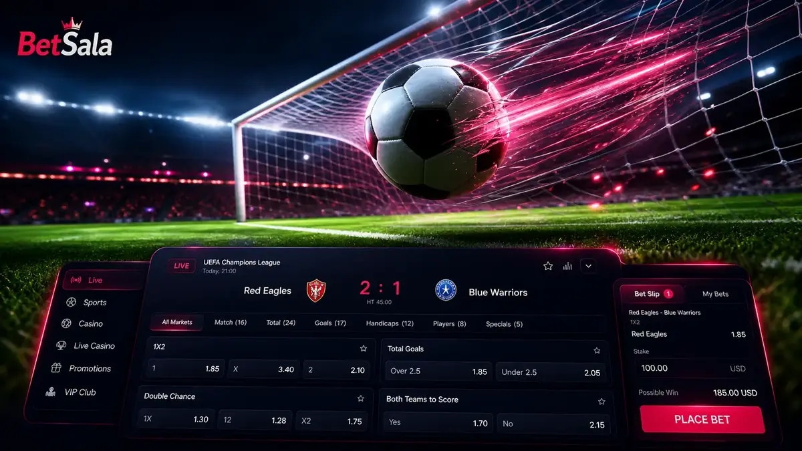

Resultado final
Mercado simple para fútbol, útil como punto de partida antes de explorar cuotas más específicas.
BetSala apuestas reúne fútbol, mercados en vivo, combinadas y promociones deportivas para usuarios que buscan BetSala bet con una lectura clara de cuotas y riesgo.

Áreas que más se consultan al revisar BetSala apuestas
Mercado simple para fútbol, útil como punto de partida antes de explorar cuotas más específicas.
Las apuestas en vivo cambian rápido; conviene definir monto antes de seguir una cuota en movimiento.
Pueden elevar la cuota, pero también aumentan la dificultad de acierto en cada selección añadida.
Algunas promociones usan free bet o apuesta gratis con reglas diferentes a los bonos de casino.
Ver másEn Chile, muchas búsquedas de BetSala apuestas deportivas parten desde fútbol. Antes de apostar, revisa liga, horario, tipo de mercado, cierre de apuesta y si la cuota corresponde a prepartido o en vivo.
La sección deportiva debe evaluarse distinta al casino: aquí importan calendario, información del evento, margen de cuota y reglas de liquidación.

El celular es útil para seguir partidos y revisar mercados rápidos, pero también puede aumentar decisiones impulsivas. Fija límites antes de entrar a cuotas en vivo y evita apostar solo por cambios de marcador.
BetSala mobile permite revisar cuenta, historial, saldo y soporte, lo que ayuda a controlar el recorrido completo de una apuesta.
Ver app
Una apuesta deportiva debería tener una lógica clara y no depender únicamente de emoción por el partido.

Es una forma de buscar la zona de apuestas de BetSala, especialmente deportes y fútbol.
No como categoría principal. Casino y apuestas comparten cuenta, pero tienen reglas y secciones separadas.
La guía contempla apuestas en vivo, aunque el usuario debe revisar disponibilidad dentro de su cuenta.
No siempre. Apuesta gratis, bono de bienvenida y giros gratis pueden tener requisitos diferentes.